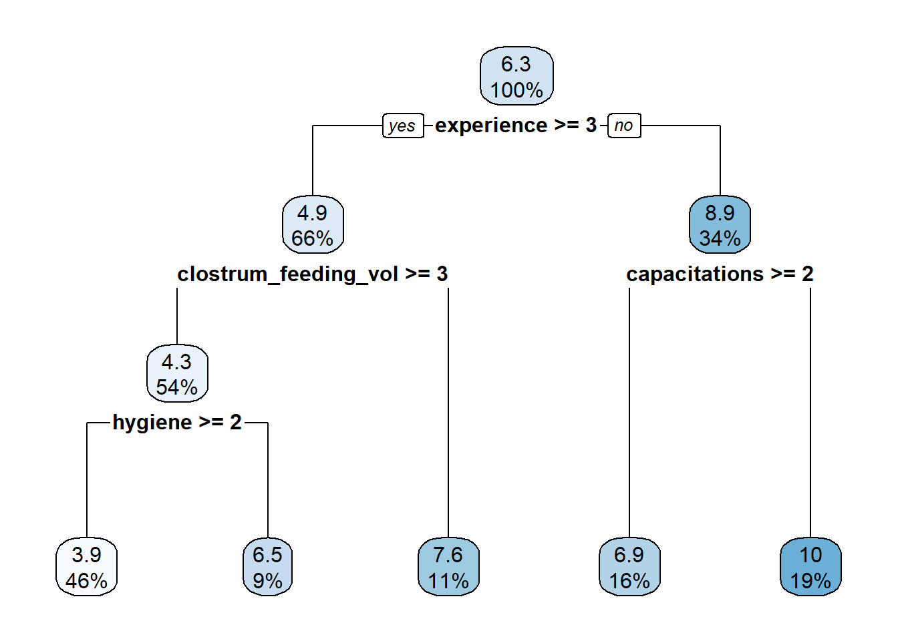

dat <- rio::import(here::here("survey/survey23.csv"))pacman::p_load(tidyverse, janitor, skimr,
# GGally, correlation,
# performance,
scales,
# emmeans, multcomp, finalfit,
# oddsratio,
coefplot,
OddsPlotty,
relaimpo,
gtools,
sjPlot)
pacman::p_load(rpart, rpart.plot)
conflicted::conflict_prefer("select", "dplyr")[conflicted] Will prefer dplyr::select over any other package.conflicted::conflict_prefer("filter", "dplyr")[conflicted] Will prefer dplyr::filter over any other package.Mortalidad
dat_mort <- dat %>%
select(-c(feed_cows, milk_yield, scc, afb, ffi)) %>%
drop_na()
dat_mort %>% skim()| Name | Piped data |
| Number of rows | 90 |
| Number of columns | 12 |
| _______________________ | |
| Column type frequency: | |
| numeric | 12 |
| ________________________ | |
| Group variables | None |
Variable type: numeric
| skim_variable | n_missing | complete_rate | mean | sd | p0 | p25 | p50 | p75 | p100 | hist |
|---|---|---|---|---|---|---|---|---|---|---|
| vacination | 0 | 1 | 2.53 | 0.60 | 1 | 2 | 3 | 3 | 3.0 | ▁▁▅▁▇ |
| prepartum | 0 | 1 | 2.39 | 0.63 | 1 | 2 | 2 | 3 | 3.0 | ▁▁▇▁▇ |
| experience | 0 | 1 | 3.13 | 1.04 | 1 | 2 | 4 | 4 | 4.0 | ▁▅▁▂▇ |
| capacitations | 0 | 1 | 1.57 | 0.75 | 1 | 1 | 1 | 2 | 3.0 | ▇▁▃▁▂ |
| rearing_system | 0 | 1 | 1.90 | 0.46 | 1 | 2 | 2 | 2 | 2.5 | ▂▁▁▇▂ |
| realiza_calostrado | 0 | 1 | 1.83 | 0.66 | 1 | 1 | 2 | 2 | 3.0 | ▅▁▇▁▂ |
| calostrum_feeding_num | 0 | 1 | 1.60 | 0.65 | 1 | 1 | 2 | 2 | 3.0 | ▇▁▇▁▂ |
| clostrum_feeding_vol | 0 | 1 | 3.41 | 1.16 | 1 | 3 | 4 | 4 | 5.0 | ▁▅▆▇▅ |
| liquid_feeding_volume | 0 | 1 | 2.37 | 0.51 | 1 | 2 | 2 | 3 | 3.0 | ▁▁▇▁▅ |
| hygiene | 0 | 1 | 2.27 | 0.75 | 1 | 2 | 2 | 3 | 3.0 | ▃▁▇▁▇ |
| disease_ranking | 0 | 1 | 1.91 | 1.38 | 1 | 1 | 1 | 3 | 5.0 | ▇▁▁▂▁ |
| mortality | 0 | 1 | 6.26 | 5.04 | 2 | 2 | 7 | 7 | 25.0 | ▇▆▃▁▁ |
Reg log - mort<5
mod_bin <- glm(mortality > 5 ~ ., data=dat_mort)
mod_step <- stepAIC(mod_bin, direction="both")Start: AIC=119.03
mortality > 5 ~ vacination + prepartum + experience + capacitations +
rearing_system + realiza_calostrado + calostrum_feeding_num +
clostrum_feeding_vol + liquid_feeding_volume + hygiene +
disease_ranking
Df Deviance AIC
- calostrum_feeding_num 1 14.834 117.15
- rearing_system 1 14.838 117.17
- realiza_calostrado 1 14.841 117.19
- disease_ranking 1 14.900 117.55
- prepartum 1 15.068 118.56
- clostrum_feeding_vol 1 15.112 118.82
<none> 14.814 119.03
- hygiene 1 15.422 120.65
- capacitations 1 15.671 122.09
- vacination 1 15.716 122.35
- liquid_feeding_volume 1 15.961 123.74
- experience 1 16.069 124.35
Step: AIC=117.15
mortality > 5 ~ vacination + prepartum + experience + capacitations +
rearing_system + realiza_calostrado + clostrum_feeding_vol +
liquid_feeding_volume + hygiene + disease_ranking
Df Deviance AIC
- rearing_system 1 14.859 115.30
- realiza_calostrado 1 14.869 115.36
- disease_ranking 1 14.906 115.58
- prepartum 1 15.069 116.56
<none> 14.834 117.15
- clostrum_feeding_vol 1 15.332 118.12
- hygiene 1 15.423 118.65
+ calostrum_feeding_num 1 14.814 119.03
- capacitations 1 15.672 120.10
- vacination 1 15.751 120.55
- liquid_feeding_volume 1 15.961 121.74
- experience 1 16.079 122.40
Step: AIC=115.3
mortality > 5 ~ vacination + prepartum + experience + capacitations +
realiza_calostrado + clostrum_feeding_vol + liquid_feeding_volume +
hygiene + disease_ranking
Df Deviance AIC
- realiza_calostrado 1 14.898 113.54
- disease_ranking 1 14.920 113.67
- prepartum 1 15.143 115.01
<none> 14.859 115.30
- clostrum_feeding_vol 1 15.338 116.15
- hygiene 1 15.455 116.84
+ rearing_system 1 14.834 117.15
+ calostrum_feeding_num 1 14.838 117.17
- capacitations 1 15.727 118.41
- vacination 1 15.802 118.84
- liquid_feeding_volume 1 16.017 120.05
- experience 1 16.080 120.41
Step: AIC=113.54
mortality > 5 ~ vacination + prepartum + experience + capacitations +
clostrum_feeding_vol + liquid_feeding_volume + hygiene +
disease_ranking
Df Deviance AIC
- disease_ranking 1 14.949 111.85
- prepartum 1 15.173 113.18
<none> 14.898 113.54
- clostrum_feeding_vol 1 15.368 114.33
- hygiene 1 15.482 115.00
+ realiza_calostrado 1 14.859 115.30
+ rearing_system 1 14.869 115.36
+ calostrum_feeding_num 1 14.869 115.36
- capacitations 1 15.731 116.43
- vacination 1 15.990 117.90
- liquid_feeding_volume 1 16.047 118.22
- experience 1 16.172 118.92
Step: AIC=111.85
mortality > 5 ~ vacination + prepartum + experience + capacitations +
clostrum_feeding_vol + liquid_feeding_volume + hygiene
Df Deviance AIC
- prepartum 1 15.194 111.31
<none> 14.949 111.85
- clostrum_feeding_vol 1 15.368 112.33
- hygiene 1 15.566 113.49
+ disease_ranking 1 14.898 113.54
+ realiza_calostrado 1 14.920 113.67
+ rearing_system 1 14.931 113.73
+ calostrum_feeding_num 1 14.939 113.78
- capacitations 1 15.815 114.91
- vacination 1 16.009 116.01
- liquid_feeding_volume 1 16.079 116.41
- experience 1 16.197 117.06
Step: AIC=111.31
mortality > 5 ~ vacination + experience + capacitations + clostrum_feeding_vol +
liquid_feeding_volume + hygiene
Df Deviance AIC
<none> 15.194 111.31
- clostrum_feeding_vol 1 15.553 111.41
+ prepartum 1 14.949 111.85
- hygiene 1 15.652 111.98
+ rearing_system 1 15.129 112.92
+ realiza_calostrado 1 15.170 113.16
+ disease_ranking 1 15.173 113.18
+ calostrum_feeding_num 1 15.194 113.31
- capacitations 1 15.972 113.80
- vacination 1 16.266 115.44
- experience 1 16.311 115.69
- liquid_feeding_volume 1 16.352 115.92summary(mod_step)
Call:
glm(formula = mortality > 5 ~ vacination + experience + capacitations +
clostrum_feeding_vol + liquid_feeding_volume + hygiene, data = dat_mort)
Deviance Residuals:
Min 1Q Median 3Q Max
-1.14876 -0.31930 0.02987 0.28526 1.04727
Coefficients:
Estimate Std. Error t value Pr(>|t|)
(Intercept) 1.65541 0.33639 4.921 4.3e-06 ***
vacination 0.19393 0.08012 2.421 0.0177 *
experience -0.11634 0.04710 -2.470 0.0156 *
capacitations -0.13476 0.06537 -2.062 0.0424 *
clostrum_feeding_vol -0.06148 0.04386 -1.402 0.1647
liquid_feeding_volume -0.24862 0.09886 -2.515 0.0138 *
hygiene -0.10080 0.06374 -1.581 0.1176
---
Signif. codes: 0 '***' 0.001 '**' 0.01 '*' 0.05 '.' 0.1 ' ' 1
(Dispersion parameter for gaussian family taken to be 0.1830585)
Null deviance: 22.322 on 89 degrees of freedom
Residual deviance: 15.194 on 83 degrees of freedom
AIC: 111.31
Number of Fisher Scoring iterations: 2odds_plot(mod_step)Waiting for profiling to be done...$odds_data
# A tibble: 6 × 4
OR lower upper vars
<dbl> <dbl> <dbl> <chr>
1 1.21 1.04 1.42 vacination
2 0.890 0.812 0.976 experience
3 0.874 0.769 0.993 capacitations
4 0.940 0.863 1.02 clostrum_feeding_vol
5 0.780 0.643 0.947 liquid_feeding_volume
6 0.904 0.798 1.02 hygiene
$odds_plot
Podemos ver en la tabla que se reduce en un 80% (1-0.2) la probabilidad de que la mortalidad sea mayor al 5% cuando el volumen de dieta liquida pasa de 2 a 4 litros y de 4 a 6 litros. (Por cada salto, la probabilidad re reduce un 80%).
Regresion lineal multiple
mod <- lm(mortality ~ ., data= dat_mort)
summary(mod)
Call:
lm(formula = mortality ~ ., data = dat_mort)
Residuals:
Min 1Q Median 3Q Max
-9.8879 -2.7641 -0.6773 2.2867 10.8777
Coefficients:
Estimate Std. Error t value Pr(>|t|)
(Intercept) 15.30222 3.95861 3.866 0.000228 ***
vacination 2.04850 0.80724 2.538 0.013153 *
prepartum -0.08371 0.81284 -0.103 0.918235
experience -1.88474 0.46931 -4.016 0.000135 ***
capacitations -1.65078 0.66408 -2.486 0.015065 *
rearing_system 1.59171 1.03178 1.543 0.126954
realiza_calostrado -0.26763 0.73612 -0.364 0.717161
calostrum_feeding_num 0.34643 0.89936 0.385 0.701145
clostrum_feeding_vol -0.20080 0.52763 -0.381 0.704557
liquid_feeding_volume -1.79676 0.97904 -1.835 0.070284 .
hygiene -1.53697 0.65636 -2.342 0.021751 *
disease_ranking -0.11054 0.37215 -0.297 0.767225
---
Signif. codes: 0 '***' 0.001 '**' 0.01 '*' 0.05 '.' 0.1 ' ' 1
Residual standard error: 4.164 on 78 degrees of freedom
Multiple R-squared: 0.4012, Adjusted R-squared: 0.3168
F-statistic: 4.751 on 11 and 78 DF, p-value: 1.506e-05mod_step <- stepAIC(mod, direction="both")Start: AIC=267.91
mortality ~ vacination + prepartum + experience + capacitations +
rearing_system + realiza_calostrado + calostrum_feeding_num +
clostrum_feeding_vol + liquid_feeding_volume + hygiene +
disease_ranking
Df Sum of Sq RSS AIC
- prepartum 1 0.184 1352.9 265.92
- disease_ranking 1 1.530 1354.2 266.01
- realiza_calostrado 1 2.292 1355.0 266.06
- clostrum_feeding_vol 1 2.512 1355.2 266.07
- calostrum_feeding_num 1 2.573 1355.3 266.08
<none> 1352.7 267.91
- rearing_system 1 41.273 1394.0 268.61
- liquid_feeding_volume 1 58.411 1411.1 269.71
- hygiene 1 95.096 1447.8 272.02
- capacitations 1 107.162 1459.9 272.77
- vacination 1 111.681 1464.4 273.05
- experience 1 279.706 1632.4 282.82
Step: AIC=265.92
mortality ~ vacination + experience + capacitations + rearing_system +
realiza_calostrado + calostrum_feeding_num + clostrum_feeding_vol +
liquid_feeding_volume + hygiene + disease_ranking
Df Sum of Sq RSS AIC
- disease_ranking 1 1.389 1354.3 264.01
- realiza_calostrado 1 2.257 1355.2 264.07
- calostrum_feeding_num 1 2.390 1355.3 264.08
- clostrum_feeding_vol 1 2.482 1355.4 264.08
<none> 1352.9 265.92
- rearing_system 1 42.170 1395.1 266.68
- liquid_feeding_volume 1 58.773 1411.7 267.75
+ prepartum 1 0.184 1352.7 267.91
- hygiene 1 106.067 1459.0 270.71
- capacitations 1 111.484 1464.4 271.04
- vacination 1 111.637 1464.5 271.05
- experience 1 285.839 1638.7 281.17
Step: AIC=264.01
mortality ~ vacination + experience + capacitations + rearing_system +
realiza_calostrado + calostrum_feeding_num + clostrum_feeding_vol +
liquid_feeding_volume + hygiene
Df Sum of Sq RSS AIC
- calostrum_feeding_num 1 1.761 1356.0 262.13
- realiza_calostrado 1 2.045 1356.3 262.15
- clostrum_feeding_vol 1 3.317 1357.6 262.23
<none> 1354.3 264.01
- rearing_system 1 46.294 1400.6 265.04
+ disease_ranking 1 1.389 1352.9 265.92
- liquid_feeding_volume 1 60.233 1414.5 265.93
+ prepartum 1 0.043 1354.2 266.01
- hygiene 1 104.718 1459.0 268.71
- capacitations 1 110.664 1465.0 269.08
- vacination 1 112.581 1466.9 269.20
- experience 1 288.487 1642.8 279.39
Step: AIC=262.13
mortality ~ vacination + experience + capacitations + rearing_system +
realiza_calostrado + clostrum_feeding_vol + liquid_feeding_volume +
hygiene
Df Sum of Sq RSS AIC
- clostrum_feeding_vol 1 1.691 1357.7 260.24
- realiza_calostrado 1 2.766 1358.8 260.31
<none> 1356.0 262.13
- rearing_system 1 46.400 1402.5 263.15
+ calostrum_feeding_num 1 1.761 1354.3 264.01
+ disease_ranking 1 0.759 1355.3 264.08
+ prepartum 1 0.007 1356.0 264.13
- liquid_feeding_volume 1 64.618 1420.7 264.32
- hygiene 1 109.534 1465.6 267.12
- vacination 1 111.369 1467.4 267.23
- capacitations 1 119.383 1475.4 267.72
- experience 1 288.421 1644.5 277.48
Step: AIC=260.24
mortality ~ vacination + experience + capacitations + rearing_system +
realiza_calostrado + liquid_feeding_volume + hygiene
Df Sum of Sq RSS AIC
- realiza_calostrado 1 2.695 1360.4 258.42
<none> 1357.7 260.24
- rearing_system 1 45.093 1402.8 261.18
+ clostrum_feeding_vol 1 1.691 1356.0 262.13
+ disease_ranking 1 1.595 1356.2 262.13
+ calostrum_feeding_num 1 0.135 1357.6 262.23
+ prepartum 1 0.000 1357.7 262.24
- liquid_feeding_volume 1 81.358 1439.1 263.48
- vacination 1 109.792 1467.5 265.24
- hygiene 1 112.476 1470.2 265.40
- capacitations 1 126.226 1484.0 266.24
- experience 1 304.720 1662.5 276.46
Step: AIC=258.42
mortality ~ vacination + experience + capacitations + rearing_system +
liquid_feeding_volume + hygiene
Df Sum of Sq RSS AIC
<none> 1360.4 258.42
- rearing_system 1 43.565 1404.0 259.25
+ realiza_calostrado 1 2.695 1357.7 260.24
+ clostrum_feeding_vol 1 1.621 1358.8 260.31
+ disease_ranking 1 1.206 1359.2 260.34
+ calostrum_feeding_num 1 0.355 1360.1 260.39
+ prepartum 1 0.005 1360.4 260.42
- liquid_feeding_volume 1 82.063 1442.5 261.69
- vacination 1 107.708 1468.2 263.27
- hygiene 1 114.212 1474.7 263.67
- capacitations 1 135.337 1495.8 264.95
- experience 1 302.235 1662.7 274.47summary(mod_step)
Call:
lm(formula = mortality ~ vacination + experience + capacitations +
rearing_system + liquid_feeding_volume + hygiene, data = dat_mort)
Residuals:
Min 1Q Median 3Q Max
-9.6512 -2.6977 -0.7741 2.7653 11.0904
Coefficients:
Estimate Std. Error t value Pr(>|t|)
(Intercept) 15.3567 3.4916 4.398 3.22e-05 ***
vacination 1.9459 0.7591 2.563 0.01217 *
experience -1.8999 0.4424 -4.294 4.73e-05 ***
capacitations -1.7597 0.6124 -2.873 0.00515 **
rearing_system 1.5556 0.9542 1.630 0.10683
liquid_feeding_volume -1.9749 0.8826 -2.238 0.02793 *
hygiene -1.5894 0.6021 -2.640 0.00991 **
---
Signif. codes: 0 '***' 0.001 '**' 0.01 '*' 0.05 '.' 0.1 ' ' 1
Residual standard error: 4.049 on 83 degrees of freedom
Multiple R-squared: 0.3978, Adjusted R-squared: 0.3543
F-statistic: 9.138 on 6 and 83 DF, p-value: 1.136e-07coefplot(mod_step, intercept = FALSE)
En este grafico podemos ver todas las variables que tienen efecto sobre mortalidad la disminuyen, menos vacunacion la cual muestra que al aumentar la vacunacion aumenta la mortalidad. Preguntar a Lu como armo la tabla..
Analizo la importancia relativa de las variables presentes en el modelo
ri <- calc.relimp(mod_step, type="car", rela=TRUE, rank = TRUE)
riResponse variable: mortality
Total response variance: 25.3834
Analysis based on 90 observations
6 Regressors:
vacination experience capacitations rearing_system liquid_feeding_volume hygiene
Proportion of variance explained by model: 39.78%
Metrics are normalized to sum to 100% (rela=TRUE).
Relative importance metrics:
car
vacination 0.1213761
experience 0.4196616
capacitations 0.1481106
rearing_system 0.0372352
liquid_feeding_volume 0.1446459
hygiene 0.1289706El volumen de dieta liquida explica el 30% de la mortalidad, seguido de capacitaciones con 21% e higiene con 18%
# dat %>%
# select(mortality, vacination, experience, capacitations, liquid_feeding_volume, hygiene) %>%
# ggpairs()
dat %>%
ggplot() +
aes(vacination, mortality) +
geom_jitter(width = .1) +
geom_smooth()`geom_smooth()` using method = 'loess' and formula = 'y ~ x'Warning: Removed 1 rows containing non-finite values (`stat_smooth()`).Warning in simpleLoess(y, x, w, span, degree = degree, parametric = parametric,
: pseudoinverse used at 0.99Warning in simpleLoess(y, x, w, span, degree = degree, parametric = parametric,
: neighborhood radius 2.01Warning in simpleLoess(y, x, w, span, degree = degree, parametric = parametric,
: reciprocal condition number 4.018e-17Warning in simpleLoess(y, x, w, span, degree = degree, parametric = parametric,
: There are other near singularities as well. 1.0201Warning in predLoess(object$y, object$x, newx = if (is.null(newdata)) object$x
else if (is.data.frame(newdata))
as.matrix(model.frame(delete.response(terms(object)), : pseudoinverse used at
0.99Warning in predLoess(object$y, object$x, newx = if (is.null(newdata)) object$x
else if (is.data.frame(newdata))
as.matrix(model.frame(delete.response(terms(object)), : neighborhood radius
2.01Warning in predLoess(object$y, object$x, newx = if (is.null(newdata)) object$x
else if (is.data.frame(newdata))
as.matrix(model.frame(delete.response(terms(object)), : reciprocal condition
number 4.018e-17Warning in predLoess(object$y, object$x, newx = if (is.null(newdata)) object$x
else if (is.data.frame(newdata))
as.matrix(model.frame(delete.response(terms(object)), : There are other near
singularities as well. 1.0201Warning: Removed 1 rows containing missing values (`geom_point()`).Este ultimo grafico exploratorio muestra que en realidad hay pocos datos para el nivel de vacunacion 1 y a lo mejor ahi esta la explicacion del porque da raro el resultado (>vacunacion>mortalidad)
Arbol de clasificacion
# https://www.displayr.com/how-is-variable-importance-calculated-for-a-random-forest/#:~:text=This%20importance%20is%20a%20measure,accuracy%20due%20to%20random%20noise.dat_mort$mortality %>% histdtree_quant <- rpart(
mortality ~ liquid_feeding_volume+hygiene+capacitations+experience,
data = dat_mort)
dtree_quantn= 90
node), split, n, deviance, yval
* denotes terminal node
1) root 90 2259.12200 6.255556
2) experience>=2.5 59 880.16950 4.881356
4) hygiene>=1.5 48 506.31250 4.312500
8) capacitations>=1.5 20 105.00000 3.500000
16) hygiene>=2.5 11 22.72727 2.454545 *
17) hygiene< 2.5 9 55.55556 4.777778 *
9) capacitations< 1.5 28 378.67860 4.892857
18) liquid_feeding_volume>=2.5 15 191.73330 3.866667 *
19) liquid_feeding_volume< 2.5 13 152.92310 6.076923 *
5) hygiene< 1.5 11 290.54550 7.363636 *
3) experience< 2.5 31 1055.48400 8.870968
6) capacitations>=1.5 14 316.92860 6.928571 *
7) capacitations< 1.5 17 642.23530 10.470590 *summary(dtree_quant)Call:
rpart(formula = mortality ~ liquid_feeding_volume + hygiene +
capacitations + experience, data = dat_mort)
n= 90
CP nsplit rel error xerror xstd
1 0.14318343 0 1.0000000 1.0105227 0.1848590
2 0.04263603 1 0.8568166 0.9769785 0.2214574
3 0.03687784 2 0.8141805 1.1153330 0.2286442
4 0.01253940 3 0.7773027 1.0312424 0.2229415
5 0.01182635 5 0.7522239 1.0458607 0.2228505
6 0.01000000 6 0.7403976 1.0378124 0.2232723
Variable importance
experience capacitations hygiene
53 21 21
liquid_feeding_volume
6
Node number 1: 90 observations, complexity param=0.1431834
mean=6.255556, MSE=25.10136
left son=2 (59 obs) right son=3 (31 obs)
Primary splits:
experience < 2.5 to the right, improve=0.14318340, (0 missing)
liquid_feeding_volume < 2.5 to the right, improve=0.09872084, (0 missing)
hygiene < 1.5 to the right, improve=0.06786700, (0 missing)
capacitations < 1.5 to the right, improve=0.04769934, (0 missing)
Node number 2: 59 observations, complexity param=0.03687784
mean=4.881356, MSE=14.91813
left son=4 (48 obs) right son=5 (11 obs)
Primary splits:
hygiene < 1.5 to the right, improve=0.09465397, (0 missing)
liquid_feeding_volume < 2.5 to the right, improve=0.07195382, (0 missing)
capacitations < 1.5 to the right, improve=0.05587464, (0 missing)
experience < 3.5 to the right, improve=0.01711881, (0 missing)
Node number 3: 31 observations, complexity param=0.04263603
mean=8.870968, MSE=34.04787
left son=6 (14 obs) right son=7 (17 obs)
Primary splits:
capacitations < 1.5 to the right, improve=0.09125673, (0 missing)
hygiene < 2.5 to the right, improve=0.07036602, (0 missing)
Surrogate splits:
hygiene < 2.5 to the right, agree=0.613, adj=0.143, (0 split)
Node number 4: 48 observations, complexity param=0.0125394
mean=4.3125, MSE=10.54818
left son=8 (20 obs) right son=9 (28 obs)
Primary splits:
capacitations < 1.5 to the right, improve=0.044703480, (0 missing)
experience < 3.5 to the right, improve=0.039180350, (0 missing)
hygiene < 2.5 to the right, improve=0.010278450, (0 missing)
liquid_feeding_volume < 2.5 to the right, improve=0.009258116, (0 missing)
Node number 5: 11 observations
mean=7.363636, MSE=26.41322
Node number 6: 14 observations
mean=6.928571, MSE=22.63776
Node number 7: 17 observations
mean=10.47059, MSE=37.77855
Node number 8: 20 observations, complexity param=0.01182635
mean=3.5, MSE=5.25
left son=16 (11 obs) right son=17 (9 obs)
Primary splits:
hygiene < 2.5 to the right, improve=0.25444930, (0 missing)
liquid_feeding_volume < 2.5 to the left, improve=0.08128908, (0 missing)
capacitations < 2.5 to the right, improve=0.06331763, (0 missing)
Surrogate splits:
capacitations < 2.5 to the right, agree=0.7, adj=0.333, (0 split)
experience < 3.5 to the right, agree=0.6, adj=0.111, (0 split)
Node number 9: 28 observations, complexity param=0.0125394
mean=4.892857, MSE=13.52423
left son=18 (15 obs) right son=19 (13 obs)
Primary splits:
liquid_feeding_volume < 2.5 to the right, improve=0.08984443, (0 missing)
hygiene < 2.5 to the left, improve=0.01509461, (0 missing)
Surrogate splits:
hygiene < 2.5 to the right, agree=0.571, adj=0.077, (0 split)
Node number 16: 11 observations
mean=2.454545, MSE=2.066116
Node number 17: 9 observations
mean=4.777778, MSE=6.17284
Node number 18: 15 observations
mean=3.866667, MSE=12.78222
Node number 19: 13 observations
mean=6.076923, MSE=11.76331 rpart.plot(dtree_quant)
Clasifica los casos. Ayuda a explicar como se relacionan las variables con la mortalidad. Asi, de las encuestas con baja mortalidad un 42% daba alto vol de dieta liquida (>=3 - preguntar a Lu como hizo la clasificacion para interpretar mejor), de ese 42% un 92% tubo baja mortalidad. De los que dieron menor volumen de dieta iquida, cuando realizaron practicas de higiene y capacitacion tuvieron baja mortalidad (25%) y media mortalidad el 19%. Mientras que el 14% restante que alimento con poco volumen y no hizo nada mas (higiene ni capacitacion) tuvo alta mortalidad.
- Importancia de las variables predictoras sobre mortalidad
df <- data.frame(imp = dtree_quant$variable.importance) %>%
rownames_to_column() %>%
rename("variable" = rowname) %>%
arrange(imp) %>%
mutate(variable = fct_inorder(variable))
# Basic piechart
df %>%
ggplot() +
geom_col(aes(x = variable, y = imp),
col = "black", show.legend = F) +
coord_flip() +
scale_fill_grey() +
theme_bw()